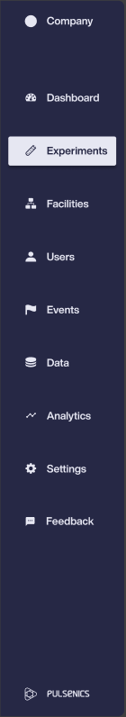
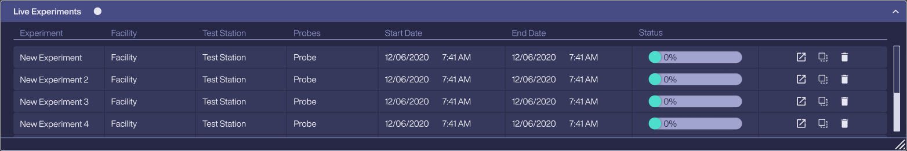
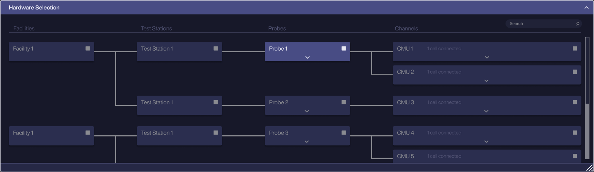
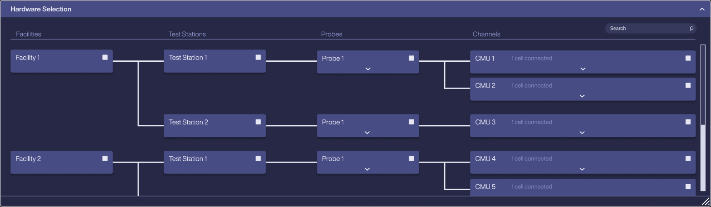
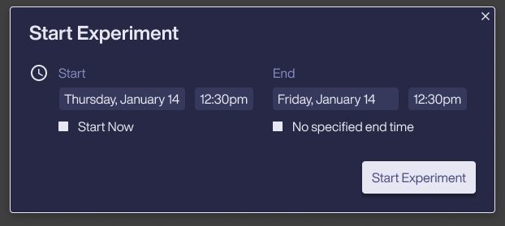
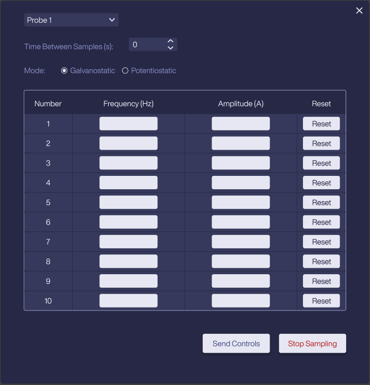
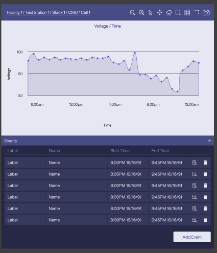
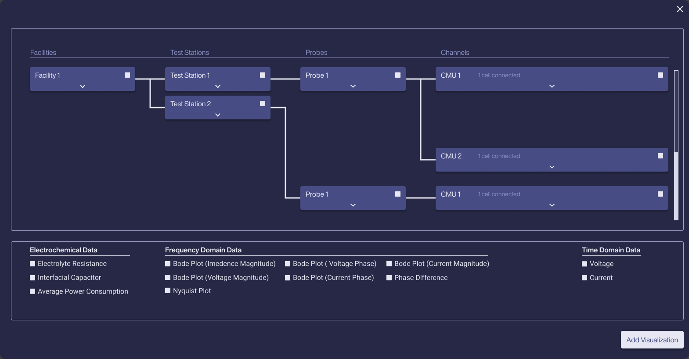
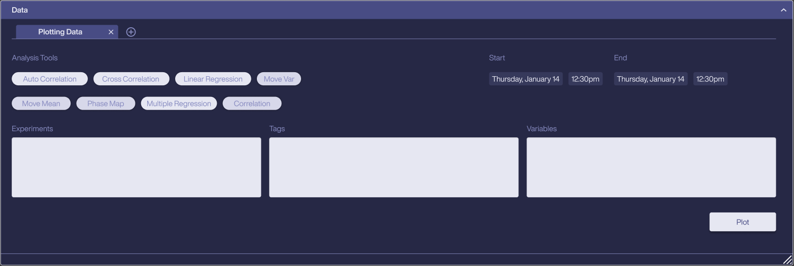
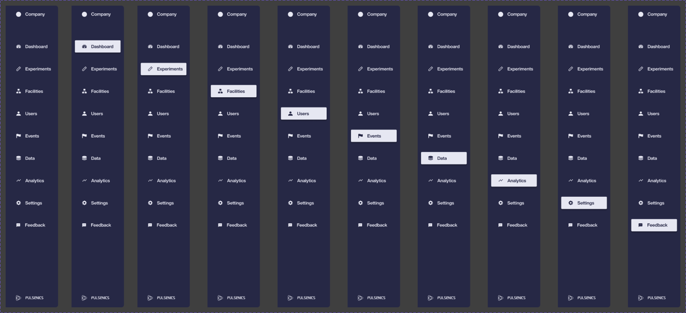

Pulsenics System Software
The web app Pulsenics and its clients use to manage their testing hardware, run experiments, control probes and analyse electrochemical data.



- ClientPulsenics, Toronto
- ProductWeb app for running experiments and managing probes
- TeamTwo designers: me and Marc Varone
- My roleProduct design and the UI system, from the ground up
- StatusCurrent version of the product
Design a tool that lets Pulsenics and its clients run experiments and manage every probe they have connected.
Pulsenics makes electrochemical impedance spectroscopy (EIS) hardware: probes that test the health and performance of batteries, fuel cells and electrolyzers without damaging them. The software sits between that hardware and the people using it. It has to know what is plugged in where, start and stop measurements, and turn a stream of readings into something an engineer can act on.
Technical teams
Engineers and researchers who know the chemistry and want precise control, not hand-holding.
Dense and continuous
Measurements stream in from many cells at once, across frequency and time, for hours or days.
Physically nested
Facilities hold test stations, test stations hold probes, and probes connect to cells through channels.
Everything in the app supports one sequence, from plugging in hardware to explaining what the data shows.
- Pick the hardware
- Start the experiment
- Control the probe
- Watch it live
- Mark what happened
- Analyse the results
Mirror the physical setup
Hardware is chosen from a connected tree that matches how the equipment is actually wired: Facilities, then Test Stations, then Probes, then Channels, with each channel showing how many cells are connected.
Selecting any node dims every branch it doesn't belong to, so it's always clear which cells an experiment will touch. Search sits on top for setups too large to scan.

Make starting an experiment one decision
Once hardware is picked, starting is a small pop-up: a start and end time, with two shortcuts for the most common cases, Start Now and No specified end time. Long-running tests don't need a made-up end date.

Give direct control of the instrument
Probe controls expose what the hardware actually does: choose a probe, set the time between samples, switch between galvanostatic and potentiostatic mode, and enter up to ten frequency and amplitude pairs.
Send Controls and a red Stop Sampling sit together at the end, so the safe way out is always visible.

Keep running work in view
Live experiments get their own table with facility, test station, probe, timing and a progress bar, plus quick actions to open, duplicate or delete. Finished runs move to Saved Experiments, so what's running and what's done never mix.
Let people mark what happened on the data
Every graph carries its full hardware path (Facility / Test Station / Stack / CMU / Cell), so a chart is never ambiguous. A toolbar covers zoom, select, pan, reset axis, autoscale, grid, spike lines and image export.
Selecting a range on the graph creates an Event with a label and time window, and events can be tagged. Anomalies become notes the whole team can find again.

Group data the way electrochemists think
Adding a visualization reuses the hardware tree, then offers data in three groups: Electrochemical (electrolyte resistance, interfacial capacitor, average power), Frequency domain (Bode and Nyquist plots, phase difference) and Time domain (voltage, current).

Analysis in the same place
The Data panel brings analysis tools into the app: auto and cross correlation, linear and multiple regression, moving mean and variance, phase maps. Users pick experiments, tags and variables and a time range, then plot. Each analysis opens in its own tab.

Marc and I built the UI system from the ground up alongside the screens, so new features could be assembled from parts the team already trusted.
Collapsible, resizable panels
Every area of the app (hardware, tags, live and saved experiments, data, visualizations) is a panel with open, closed and empty states, so people arrange the workspace around the job in front of them.
Nine sections, two widths
Dashboard, Experiments, Facilities, Users, Events, Data, Analytics, Settings and Feedback, each with a selected state, plus an icon-only rail for more room.
One graph component
The same graph, toolbar and events tab are used everywhere data is plotted, in four states from no events to many.

Colour
Contrast
Secondary text and column headers sit close to the panel colour. I'd raise them to meet WCAG AA, which matters for people staring at data all day.
Inputs on dark
The light input fields are the brightest thing on screen. A darker field with a clear focus ring would keep attention on the data.
Hierarchy
Most panels carry the same visual weight. Giving live data more presence than setup controls would help scanning.
Designed with Marc Varone
Pulsenics System Software was designed by two of us. See more of Marc's work at marcvarone.com.